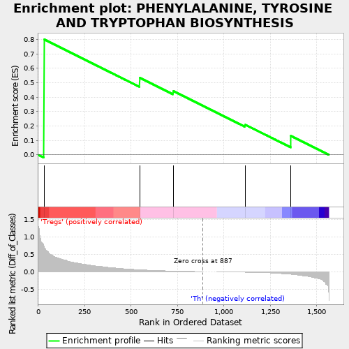
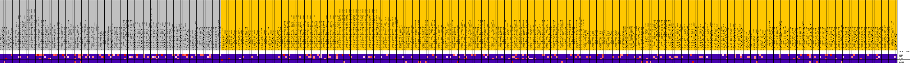
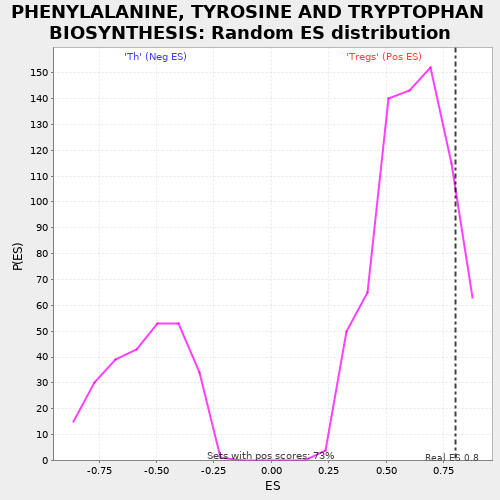

| | | Dataset | expr.pheno.cls#Tregs_versus_Th |
| Phenotype | pheno.cls#Tregs_versus_Th |
| Upregulated in class | Tregs |
| GeneSet | PHENYLALANINE, TYROSINE AND TRYPTOPHAN BIOSYNTHESIS |
| Enrichment Score (ES) | 0.80001533 |
| Normalized Enrichment Score (NES) | 1.2951034 |
| Nominal p-value | 0.12295082 |
| FDR q-value | 0.7133306 |
| FWER p-Value | 0.999 |
Table: GSEA Results Summary

Fig 1: Enrichment plot: PHENYLALANINE, TYROSINE AND TRYPTOPHAN BIOSYNTHESIS
Profile of the Running ES Score & Positions of GeneSet Members on the Rank Ordered List
| PROBE | DESCRIPTION
(from dataset) | GENE SYMBOL | GENE_TITLE | RANK IN GENE LIST | RANK METRIC SCORE | RUNNING ES | CORE ENRICHMENT | | 1 | GOT2 | na | | | 31 | 0.743 | 0.8000 | Yes |
| 2 | TAT | na | | | 546 | 0.057 | 0.5341 | No |
| 3 | GOT1 | na | | | 726 | 0.021 | 0.4425 | No |
| 4 | PAH | na | | | 1114 | -0.013 | 0.2088 | No |
| 5 | IL4I1 | na | | | 1360 | -0.072 | 0.1313 | No |
Table: GSEA details [plain text format]

Fig 2: PHENYLALANINE, TYROSINE AND TRYPTOPHAN BIOSYNTHESIS
Blue-Pink O' Gram in the Space of the Analyzed GeneSet

Fig 3: PHENYLALANINE, TYROSINE AND TRYPTOPHAN BIOSYNTHESIS: Random ES distribution
Gene set null distribution of ES for PHENYLALANINE, TYROSINE AND TRYPTOPHAN BIOSYNTHESIS